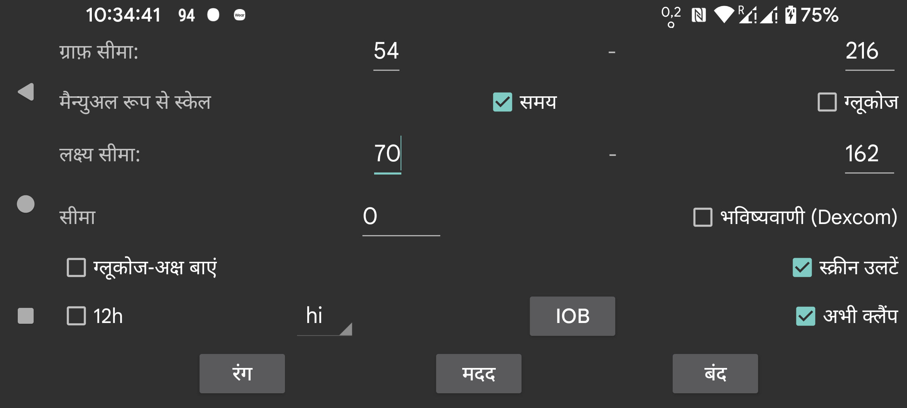

ar de es hi it ja nl ru tr uk uz en
वक्रों, स्कैन और संख्याओं के रंग बदलें। डार्क मोड स्विच करने के लिए, दायां मध्य मेन्यू->डार्क मोड का उपयोग करें।
एक कम और अधिक मान दें, ताकि स्क्रीन के नीचे का हिस्सा सबसे कम और ऊपर का हिस्सा सबसे अधिक के अनुरूप हो। इन मानों का उपयोग केवल तभी किया जाता है जब स्क्रीन पर प्रदर्शित सभी ग्लूकोज मान इन सीमाओं के भीतर हों। अन्यथा, सीमाएं इस तरह चौड़ी की जाती हैं कि सभी मान दिखाई दें। जब आप 3 mmol/L (54 mg/dL) और 9 mmol/L (162 mg/dL) लेते हैं, और दृश्य डिस्प्ले पर सभी मान 5 mmol/L और 6 mmol/L के बीच हैं, तो ग्राफ़ 3 से 9 तक ग्लूकोज अक्ष प्रदर्शित करता है।
यदि मैन्युअल रूप से स्केल ग्लूकोज चालू है, तो आप इसे बदल सकते हैं: स्क्रीन के ऊपरी भाग पर उंगली हिलाने से ग्राफ़ का ऊपरी आधा भाग ऊपर-नीचे चलता है; स्क्रीन के निचले भाग पर हिलाने से ग्राफ़ का निचला आधा भाग ऊपर-नीचे चलता है।
डिस्प्ले का ऊपरी पक्ष अलग तरह से रंगा जाता है ताकि आप अधिक मान आसानी से देख सकें। वही कम मानों के लिए भी सच है। डिस्प्ले के बहुत कम पक्ष को दिखाने के लिए एक लाल रेखा प्रदर्शित की जाती है।
ग्राफ़ में ग्लूकोज स्तर की संख्याओं को स्क्रीन के बाईं ओर रखें। उपयोगी यदि आप अपने वर्तमान ग्लूकोज को स्क्रीन के बीच में रखना चाहते हैं, उदाहरण के लिए Wear OS में।
ग्लूकोज मानों की परिवर्तन दर पर एक सीमा लागू करें। केवल तब जब परिवर्तन दर 0 से निर्दिष्ट मात्रा से अलग होती है तो परिवर्तन दर का तीर क्षैतिज से अलग होता है। आप 0 और 0.8 के बीच मनचाहे मान उपयोग कर सकते हैं। सीमा का उपयोग छोटे पूर्ण परिवर्तन दर मानों को बहुत अधिक अर्थ देने से रोकने के लिए किया जाता है। यह बहुत संभव है कि परिवर्तन दर एक धीरे-धीरे बढ़ते ग्लूकोज मान को दिखाए, पर वास्तव में यह गिर रहा हो। सीमा का उपयोग एक अधिक सावधान कथन देने के लिए किया जाता है।
Dexcom सेंसर हर वास्तविक मान के साथ एक पूर्वानुमानित मान भी भेजते हैं। मैंने इसके लिए Google पर खोज की, पर इसका कोई संदर्भ नहीं मिल सका। मुझे केवल यह मिला कि Dexcom ने एक अलार्म का समर्थन किया जो 20 मिनट पहले तक कम की भविष्यवाणी करता था, देखें https://www.dexcom.com/g7/how-it-works#alerts
जब मैंने इन मानों को 20 मिनट भविष्य में रखा, तो वे बहुत अच्छी तरह फिट नहीं हुए। जब मैंने उन्हें 10 मिनट भविष्य में रखा तो वे बहुत बेहतर फिट हुए।
जब आप यह विकल्प चालू करते हैं, तो ये पूर्वानुमानित मान उसी तरह दिखाए जाते हैं जैसे Juggluco में Libre सेंसर के इतिहास मान दिखाए जाते हैं। आप उन्हें दायां मध्य मेन्यू→इतिहास को अनचेक करके भी बंद कर सकते हैं। Juggluco में उनका उपयोग अलार्म के लिए नहीं किया जाता, आप बस उन्हें प्रदर्शित करके यह आंक सकते हैं कि वे कितनी अच्छी तरह भविष्यवाणी करते हैं।
डिस्प्ले को उल्टा करें। यह डिफ़ॉल्ट रूप से चालू है, क्योंकि अन्यथा मैं कभी-कभी सेंसर स्कैन करते समय गलती से OK छू लेता।
कुछ लोग पोर्ट्रेट मोड की मांग करते हैं, पर मैंने उसे बंद कर दिया है, क्योंकि यह ग्लूकोज ग्राफ़ के प्रदर्शन के लिए पूरी तरह अनुपयुक्त है।
IOB इस बात का माप है कि पिछली इंसुलिन खुराकों से कितनी इंसुलिन शेष है। ऐसा करने के लिए, आपको “तीव्र क्रिया वाली इंसुलिन” श्रेणी में एक लेबल के तहत इंसुलिन खुराकें दर्ज करनी होंगी। आप निर्दिष्ट कर सकते हैं कि कौन से लेबल “तीव्र क्रिया वाली इंसुलिन” हैं यह बायां मेन्यू→सेटिंग्स→डेटा आदान-प्रदान→वेब सर्वर→मात्राएं दें के तहत।
जब “अभी क्लैंप” सेट है, तो स्क्रीन पर प्रदर्शित समय अवधि बाईं ओर स्क्रॉल की जाती है ताकि वर्तमान हमेशा स्क्रीन के एक ही बिंदु पर हो। कुछ उपयोगकर्ता अपने से कुछ मीटर की दूरी पर एक कंप्यूटर पर Android एमुलेटर पर Juggluco चलाते हैं। जब “अभी क्लैंप” बंद होता है, तो वर्तमान ग्लूकोज मान का स्थान समय बीतने के साथ दाईं ओर खिसक जाता है, ताकि कुछ घंटों के बाद यह और दिखाई न दे। इससे कंप्यूटर तक चलकर स्क्रीन को कुछ सेंटीमीटर स्क्रॉल करना आवश्यक हो जाता है। जब “अभी क्लैंप” चालू होता है, तो यह ध्यान भटकाव और आवश्यक नहीं होता।
Juggluco चुनी गई भाषा में प्रदर्शित होता है। जब कोई भाषा कोड चुना नहीं गया है, तो सिस्टम भाषा का उपयोग किया जाता है।